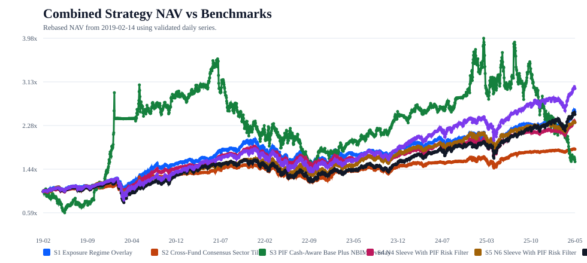
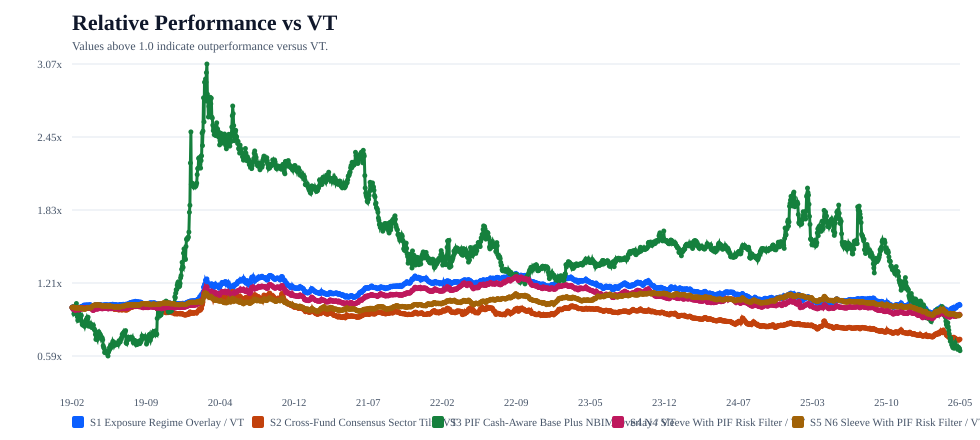
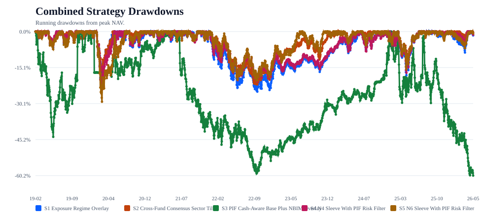
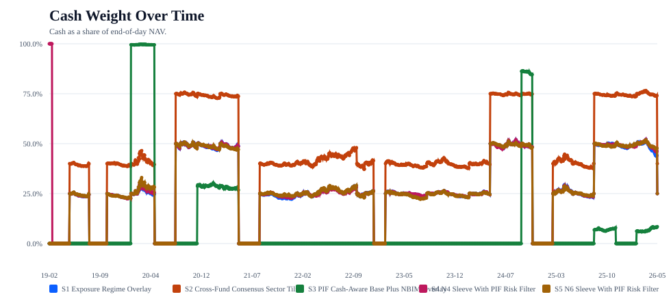
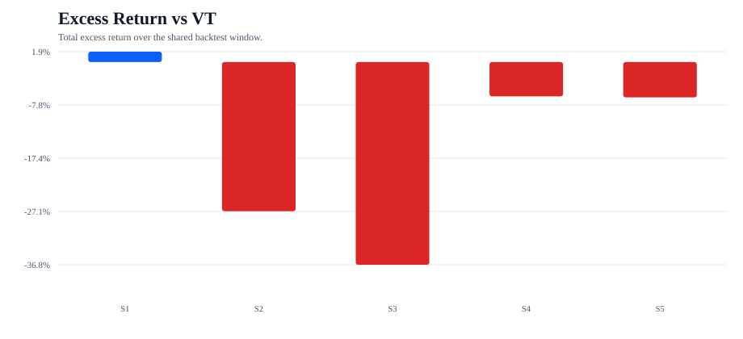
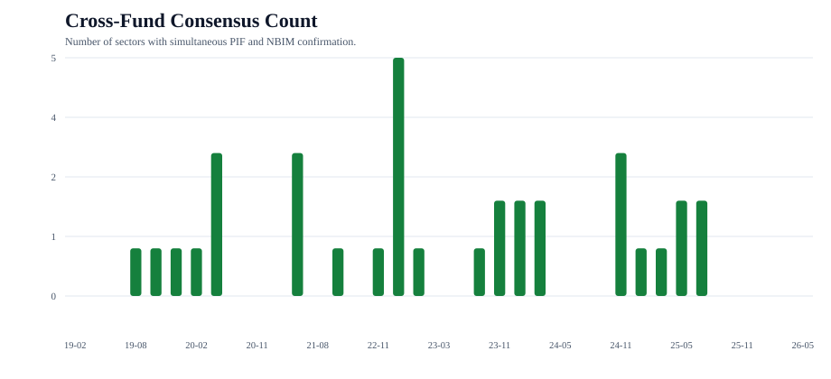

This report evaluates 5 combined PIF + NBIM strategies built from the validated Phase 2 signal stack.
| Strategy | Total Return | Excess vs VT | Excess vs SPY | Max Drawdown | Avg Cash |
|---|---|---|---|---|---|
| S1 Exposure Regime Overlay | 154.7% | 1.9% | -15.1% | -25.1% | 27.0% |
| S2 Cross-Fund Consensus Sector Tilt | 82.3% | -27.1% | -39.2% | -22.1% | 42.4% |
| S3 PIF Cash-Aware Base Plus NBIM Overlay | 58.0% | -36.8% | -47.3% | -60.2% | 7.8% |
| S4 N4 Sleeve With PIF Risk Filter | 134.4% | -6.2% | -21.9% | -24.3% | 27.6% |
| S5 N6 Sleeve With PIF Risk Filter | 133.9% | -6.4% | -22.0% | -29.4% | 27.2% |
Best excess return vs VT: S1 Exposure Regime Overlay (1.9%).
Worst excess return vs VT: S3 PIF Cash-Aware Base Plus NBIM Overlay (-36.8%).
S1 is the purest test of the combined thesis. S2 asks whether requiring confirmation improves selectivity enough to justify the time in cash and fallback benchmark exposure. S3 asks whether NBIM can improve the previously best standalone PIF construction by redistributing risk across the already-held sleeve. S4 and S5 ask the cleaner filtering question: do the more credible NBIM sleeves improve when PIF is used only as a risk throttle?
Interpretation. S1 remains the only strategy with positive excess return versus VT, and that edge is modest rather than dramatic. S2 appears too sparse and too defensive, while S3 improves the standalone P5 base by 6.1% but still fails to beat passive benchmarks. S4 and S5 help clarify that the useful cross-fund information is still better framed as a risk-and-sector overlay than as a source of large stand-alone alpha.






All combined strategy trade dates are legal relative to the underlying public dates. Holdings-plus-cash reconcile to one within floating-point tolerance, and the normalized sector stack is fully mapped into the shared taxonomy.